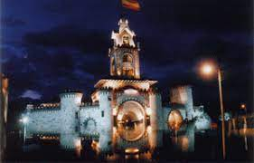
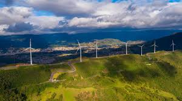
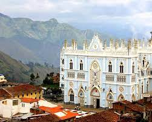
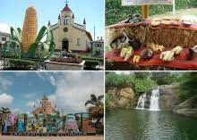
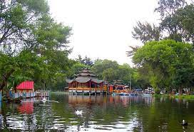
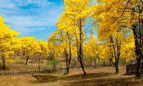
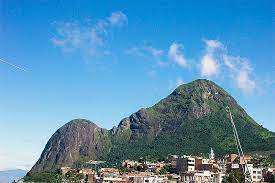

LUGARES TURÍSTICOS DE LA PROVINCIA DE LOJA

Puerta de la cuidad de Loja

Central Eólica Villonaco

Iglesia del Cisne

Vilcabamba- Malacatus

Parque Jiripo

Florecimiento de los guayacanes Zapotillo
Parque Nacional Podocarpus

Cerro Ahuaca Cariamanga